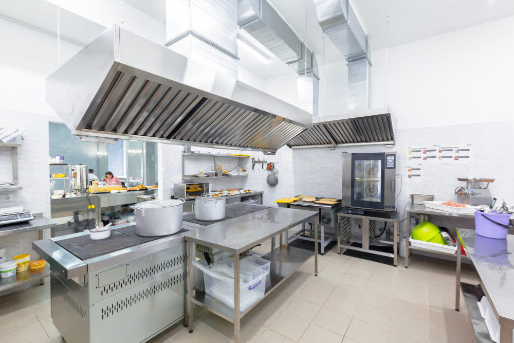
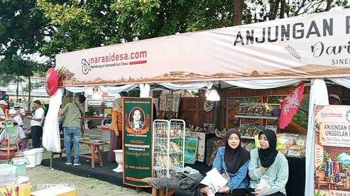
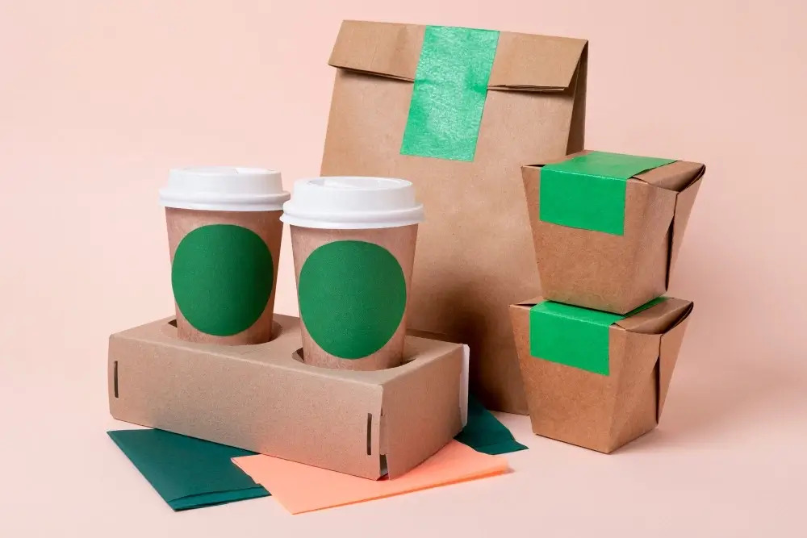

CERITA KAMI
Memberdayakan Pengrajin Lokal
Sejak 2020, Ell Kuliner menjembatani dapur-dapur UMKM tradisional di Kabupaten Klaten agar menjangkau pasar modern dengan standar kemasan higienis.



BANTUAN
Pertanyaan Umum
Produk kering tahan hingga 1 bulan dalam kemasan tertutup. Jajanan basah seperti Getuk tahan 2–3 hari di suhu ruang.
Ya, pengiriman tersedia ke seluruh Indonesia menggunakan kardus tebal dan bubble wrap gratis.
Silakan kirim pesan melalui formulir kontak di bawah untuk mendapatkan katalog harga grosir (diskon hingga 15%).
HUBUNGI KAMI
Mari Bekerja Sama
Punya pertanyaan seputar pesanan partai besar atau kemitraan UMKM? Tim kami siap membantu.
📍 Gosutan, Kranggan, Manisrenggo, Klaten
📞 0851-5168-6157
✉️ halo@EllKuliner.id
×